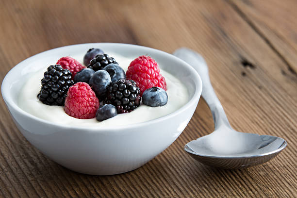

Yogurt Bowl

Description:
This is a high protein recipe perfect for your weight loss and muscle growth goals. It's approximately 300 calories with 30g of protein. It's been a staple on my aggressive cut of 1400 calories and will keep those sweet cravings away. It's super quick and easy with easy ingredient substitutions for normal yogurt. You can adjust by using different ingredients types like the protein, yogurt, and toppings to your liking, but hopefully still hitting your macros.
Ingredients:
- Nonfat Greek Yogurt
- Honey or Zero Sugar Syrup
- Cinnamon
- Frozen Mixed Berries or mixed berries of chioce
- Fat Free Whipped Cream(Optional)
- Whey Protein of choice
- Any Fruit you like
Steps:
- Put your bowl on a scale and measure out 300g of non fat greek yogurt into the bowl.
- Put a scoop of your protein and mix until well incorporated. Then drizzle on some honey or sugar free syrup
- Top with your favorite fruits, my go to are frozen mixed berries(for convenience), pineapples, canteloupe. Top off with some optional cinnamon and fat free whipped cream and enjoy!
Index